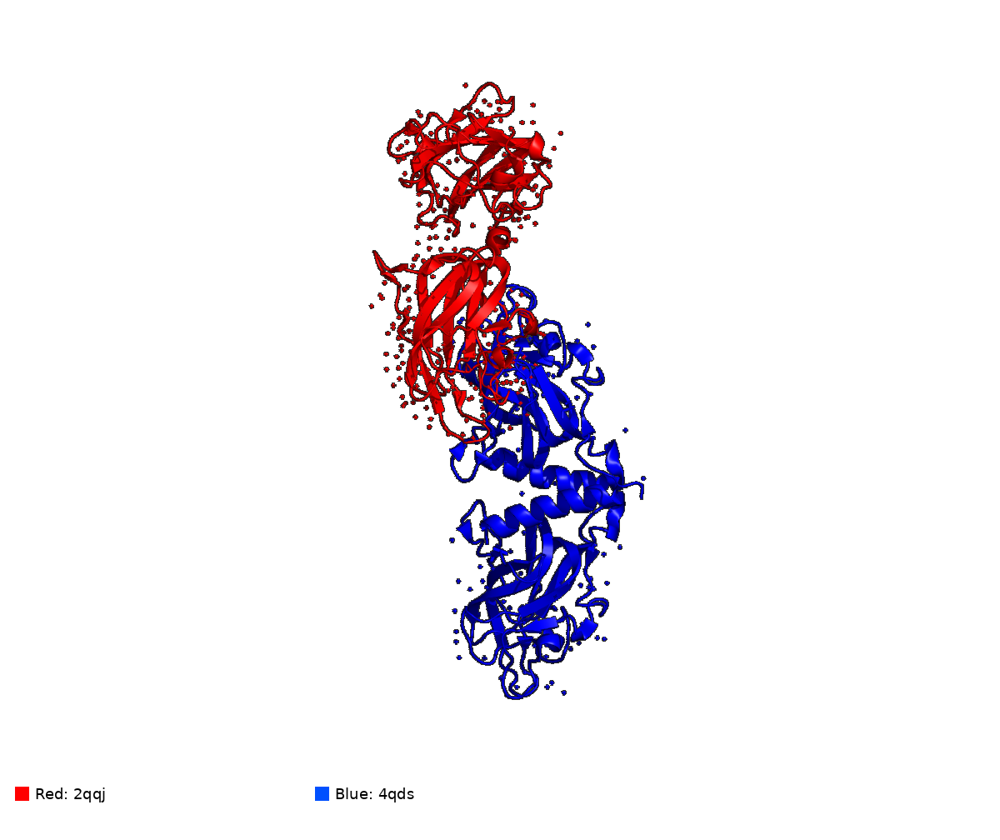
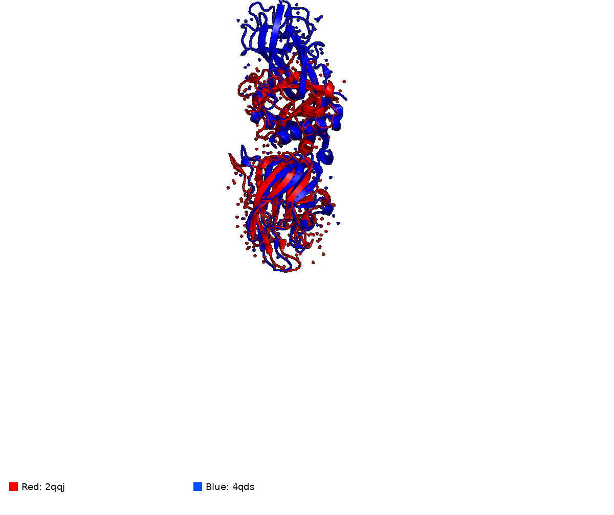
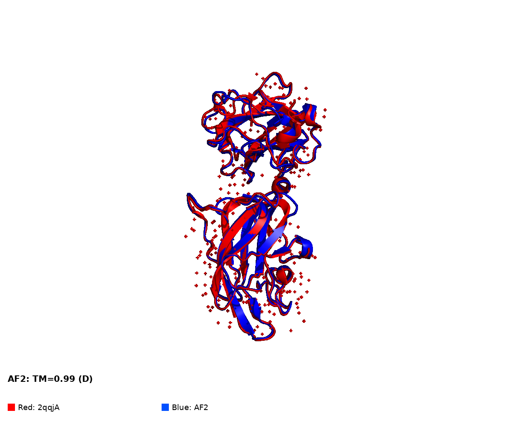
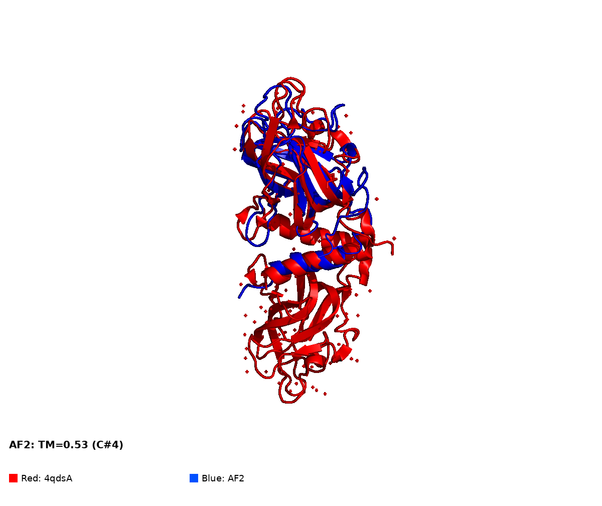
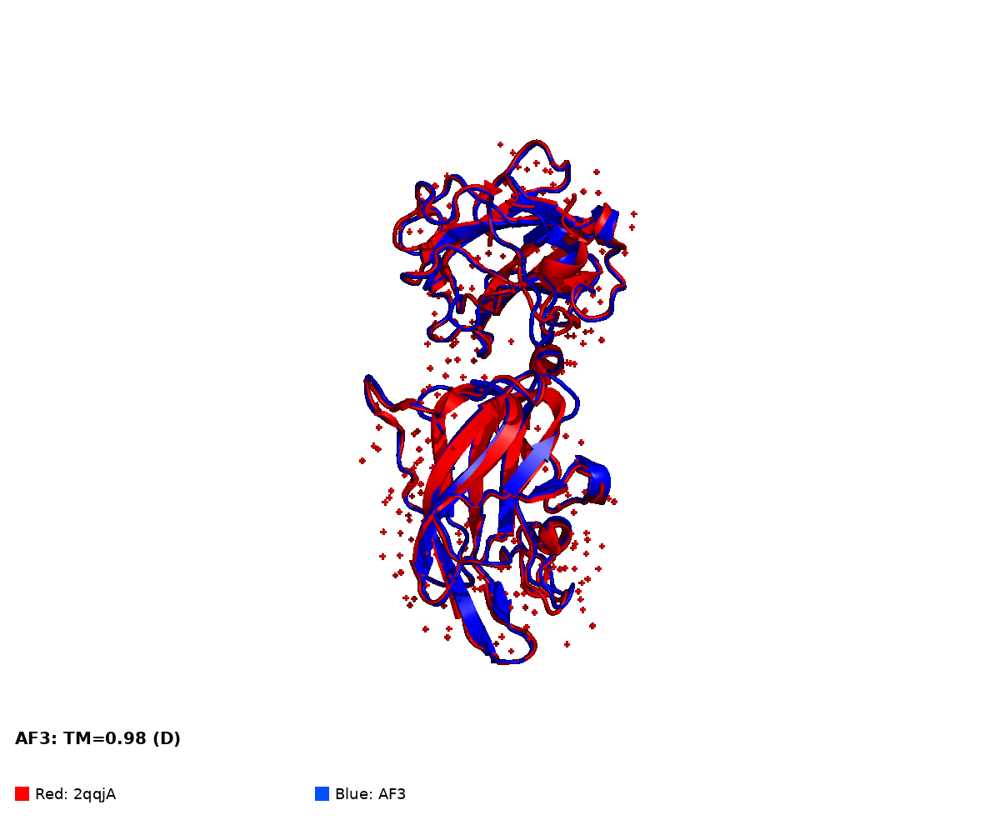
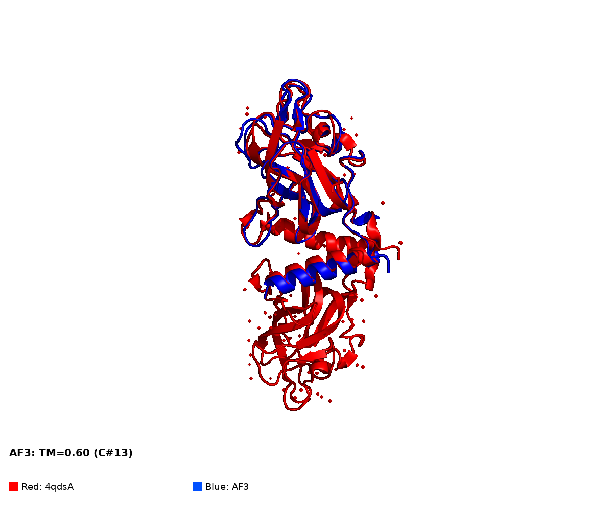
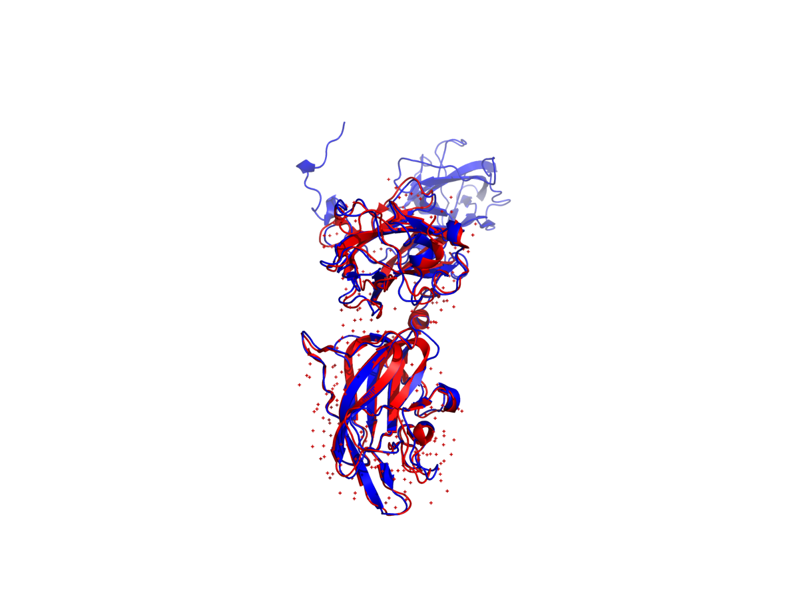
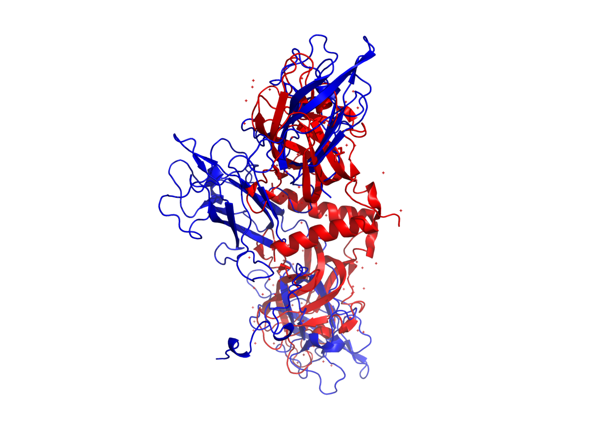
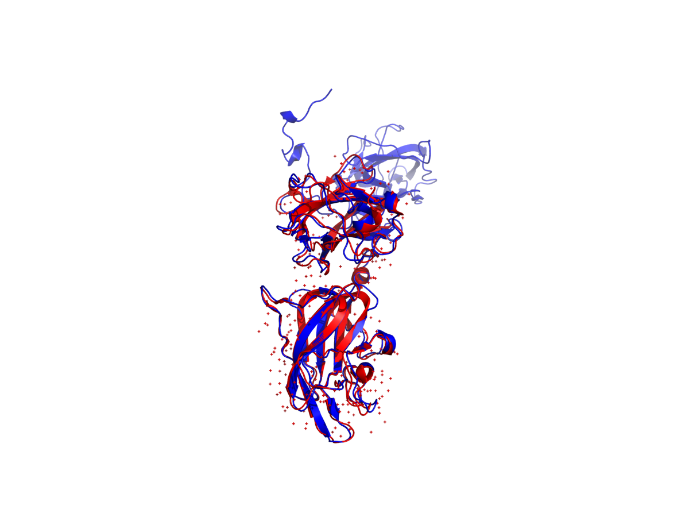
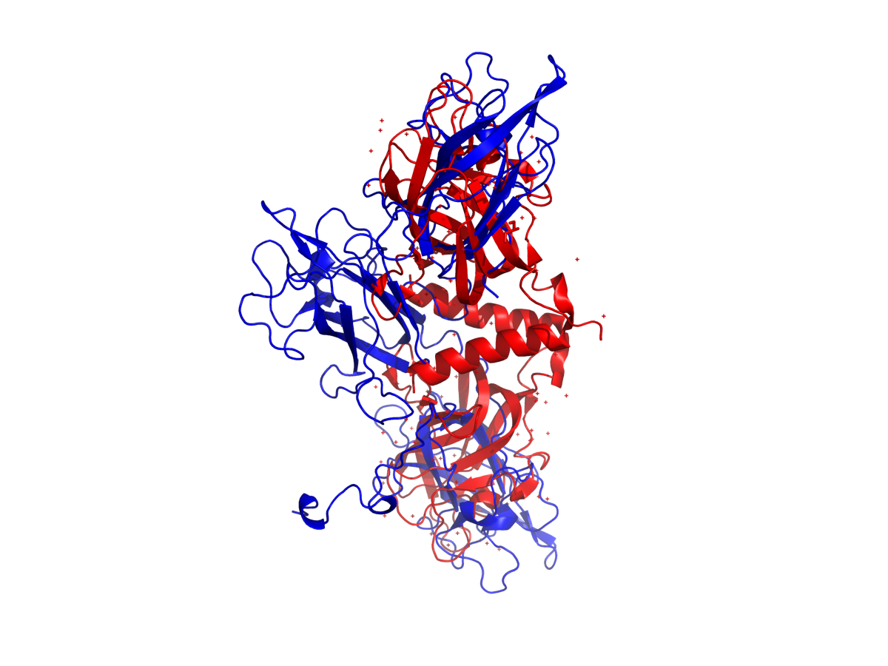
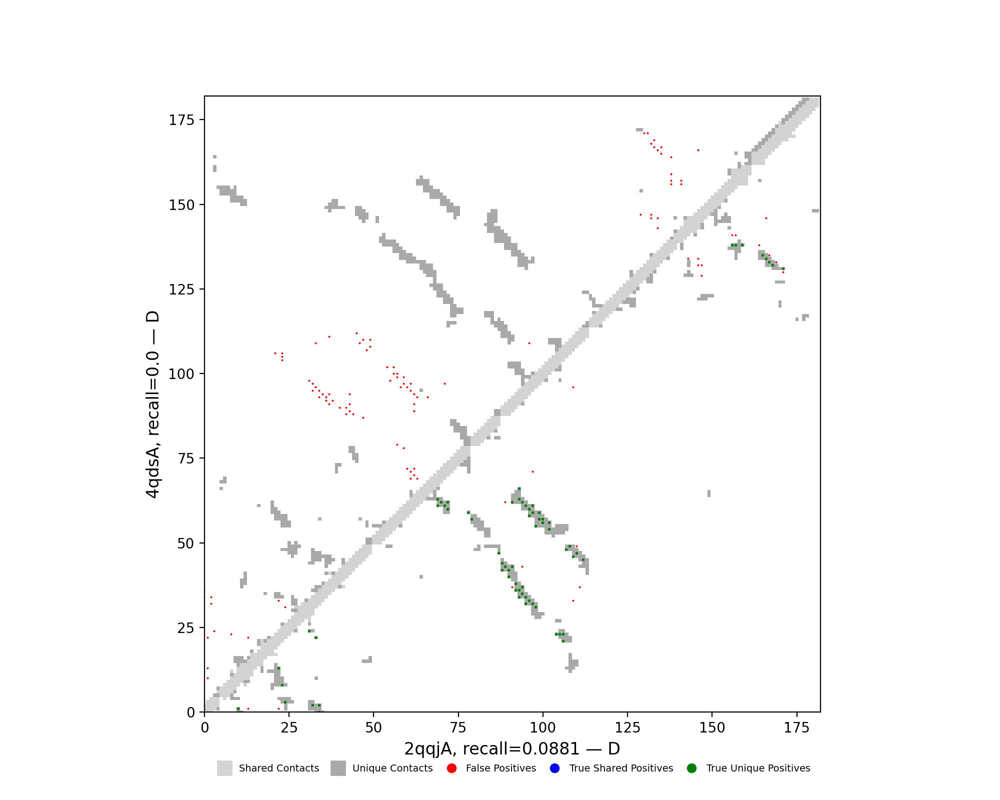
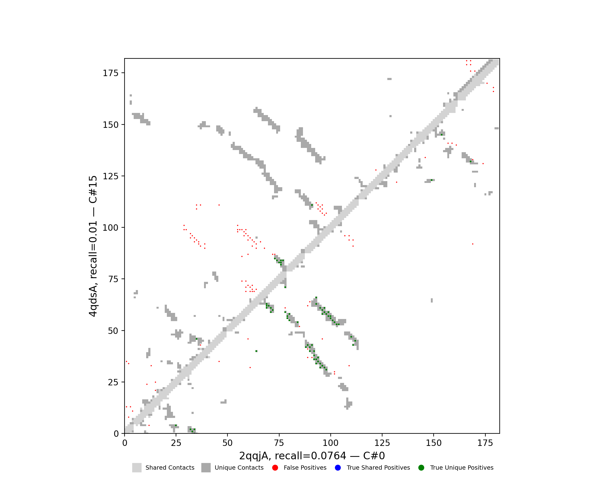
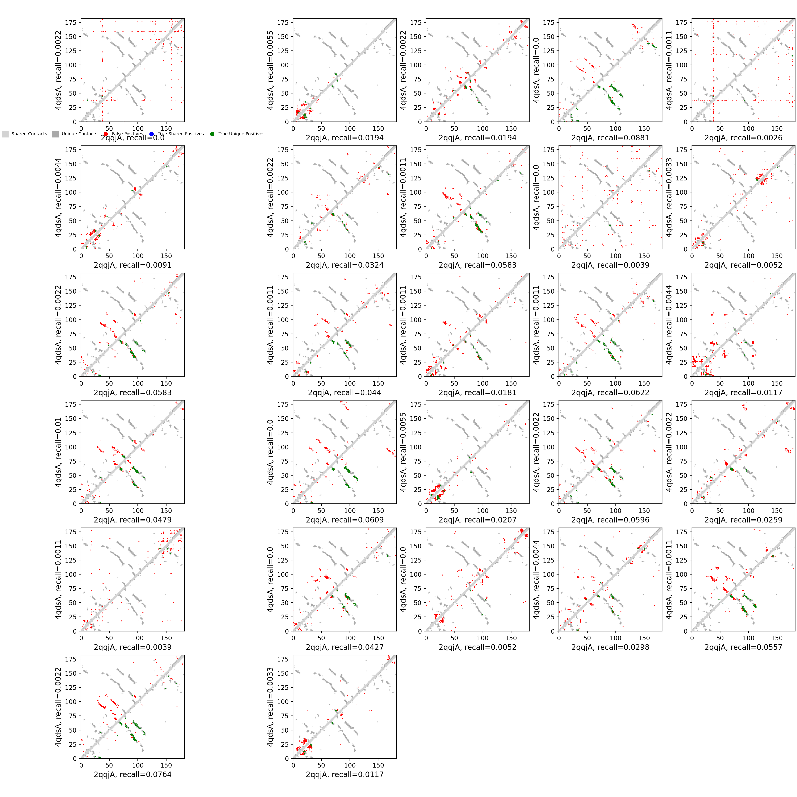
| cluster | TM-AF1 | TM-AF2 | TM-ESM1 | TM-ESM2 | RE-MSAT-COM | RE-MSAT1 | RE-MSAT2 |
|---|---|---|---|---|---|---|---|
| Deep | 0.99 | 0.52 | - | - | -0.01 | -0.01 | -0.01 |
| 000 | 0.98 | 0.52 | 0.97 | 0.59 | -0.01 | -0.01 | -0.01 |
| 001 | 0.96 | 0.52 | 0.97 | 0.6 | -0.0 | -0.0 | -0.0 |
| 002 | 0.96 | 0.51 | 0.97 | 0.54 | -0.0 | -0.0 | -0.0 |
| 003 | 0.62 | 0.5 | 0.97 | 0.66 | -0.01 | -0.0 | -0.0 |
| 004 | 0.56 | 0.57 | 0.97 | 0.62 | 0.0 | -0.0 | -0.0 |
| 005 | 0.97 | 0.51 | 0.97 | 0.57 | -0.0 | -0.0 | -0.0 |
| 006 | 0.96 | 0.52 | 0.97 | 0.58 | - | - | - |
| 007 | 0.73 | 0.58 | 0.97 | 0.52 | -0.0 | -0.0 | -0.0 |
| 008 | 0.56 | 0.5 | 0.97 | 0.56 | 0.01 | -0.0 | -0.0 |
| 009 | 0.96 | 0.51 | 0.97 | 0.56 | - | - | - |
| 010 | 0.96 | 0.51 | 0.97 | 0.52 | - | - | - |
| 011 | 0.96 | 0.52 | 0.97 | 0.53 | - | - | - |
| 012 | 0.58 | 0.6 | 0.97 | 0.52 | -0.0 | -0.0 | -0.0 |
| 013 | 0.58 | 0.6 | 0.97 | 0.52 | -0.0 | -0.0 | -0.0 |
| 014 | 0.85 | 0.49 | 0.97 | 0.52 | -0.01 | -0.0 | -0.0 |
| 015 | 0.74 | 0.49 | 0.97 | 0.52 | -0.01 | -0.0 | -0.0 |
| 016 | 0.77 | 0.46 | 0.97 | 0.52 | -0.01 | -0.0 | -0.0 |
| 017 | 0.86 | 0.5 | 0.97 | 0.52 | -0.0 | -0.0 | -0.0 |
| 018 | 0.52 | 0.38 | 0.97 | 0.52 | -0.0 | -0.0 | -0.0 |
| 019 | 0.54 | 0.41 | 0.97 | 0.52 | - | - | - |
| 020 | 0.53 | 0.41 | 0.97 | 0.52 | 0.0 | -0.0 | -0.0 |
| 021 | 0.83 | 0.49 | 0.97 | 0.52 | -0.0 | -0.0 | -0.0 |
| 022 | 0.64 | 0.51 | 0.97 | 0.52 | -0.0 | -0.0 | -0.0 |
| 023 | 0.96 | 0.51 | 0.97 | 0.52 | - | - | - |
| 024 | 0.95 | 0.51 | 0.97 | 0.56 | - | - | - |
| 025 | 0.96 | 0.51 | 0.97 | 0.52 | - | - | - |
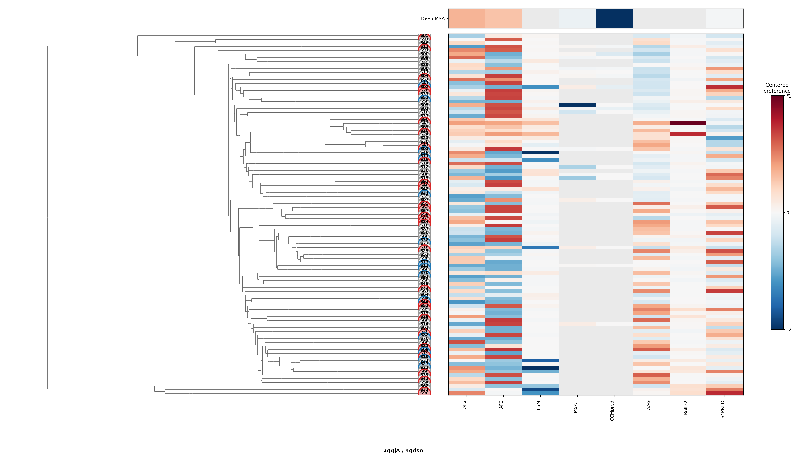